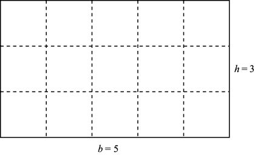
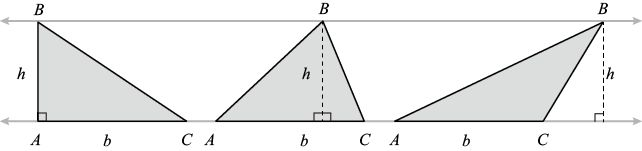
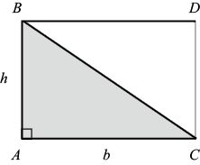
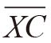

多边形的周长和面积
多边形的周长是所有边长之和。例如，如果矩形的底边长度为b，高为h，它的周长就是2b + 2h，这是因为这个矩形有两条长度为b的边和两条长度为h的边。那么，这个矩形的面积是多少呢？我们把1×1方格的面积（平方单位）定义为1。如下图所示，如果b和h是正整数，那么我们可以把这个图形分割成bh个1×1方格，因此它的面积是bh。一般来说，对于底边为b、高为h的任意矩形（其中b和h是正数，但不一定是整数），我们将它的面积定义为bh。

底为b、高为h的矩形周长是2b + 2h，面积是bh
延伸阅读
在本章中，我们一直在利用代数知识解释几何问题。不过，几何学有时候也可以帮助我们解释代数问题。思考一下这样一个代数问题：如果x 可以取任意正数，那么x + 1/x的最小值是多少？如果x = 1，上式就等于2；如果x = 1.25，上式就等于1.25 + 0.8 = 2.05；如果x = 2，得数就是2.5。这些数据似乎表明最小值是2，这个答案是正确的，但我们如何证明呢？在本书第11章中，我们可以通过微积分直截了当地解决这个问题。但是，只要动动脑筋，我们也可以借助简单的几何知识，轻轻松松地完成这项任务。
下图是一个中间有空洞的正方形。整个图形由4个长方块拼成，每个长方块的边长分别为x和1/x。整个图形（包括中间的空洞）的面积是多少？
一方面，由于该图形是边长为x + 1/x的正方形，因此它的面积为 (x + 1/x)2。另一方面，每个长方块的面积是1，这个图形的面积至少是4。也就是说：
(x + 1/x)2 H 4
从而得出 x + 1/x H 2。证明完毕。 
从矩形面积的计算方法，我们几乎可以推导出所有几何图形面积的计算方法。我们先来推导三角形面积的计算方法。
定理：底为b、高为h的三角形的面积为 bh。
bh。
下图中的3个三角形的底都是b，高都是h，因此它们的面积相等。从本质上讲，这与本章开头小测试中的问题3相同。对于很多人来说，这是一个让他们吃惊的事实。

底为b、高为h的三角形的面积是bh。无论直角三角形、锐角三角形还是钝角三角形，都遵循这个规律
根据角A与角C的大小，可以将这个问题分成3种情况考虑。如果角A或角C是直角，我们可以复制三角形ABC，并把两个三角形放在一起（如下图所示），构成面积为bh的矩形。由于三角形ABC的面积是矩形面积的1/2，因此三角形的面积必然等于bh。

两个底为b、高为h的三角形可以构成一个面积为bh的矩形
如果角A和角C都是锐角，我们也可以做出巧妙的证明。如下图所示，从点B向 画一条垂线（被称作三角形ABC的高），交点为X，那么垂线的长度为h。
画一条垂线（被称作三角形ABC的高），交点为X，那么垂线的长度为h。
可以分成 和
和

两条线段，它们的长度分别是b1和b2，因此 b1 + b2 = b。由于BXA和BXC都是直角三角形，因此从第一种情况可知，它们的面积分别是b1h和b2h。那么，三角形ABC的面积为：
b1h +b2h = ( b1 + b2)h =bh
如果角A或角C是钝角，情况就会如下图所示。
如果三角形ABC是锐角三角形，我们就把它表示成两个直角三角形的和；如果它是钝角三角形，我们就把它表示成两个直角三角形（ABY和CBY）的差。大直角三角形ABY的底是 b + c，它的面积为(b + c)h，小直角三角形CBY的面积为ch，所以三角形ABC的面积是：
(b + c)h –ch = bh
证明完毕。